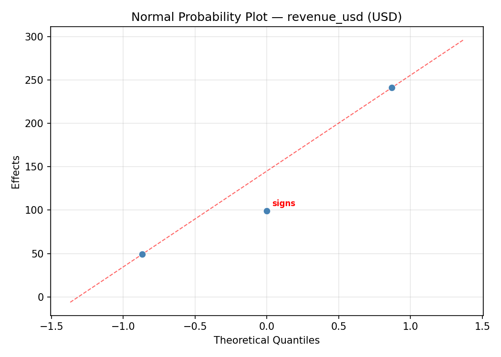
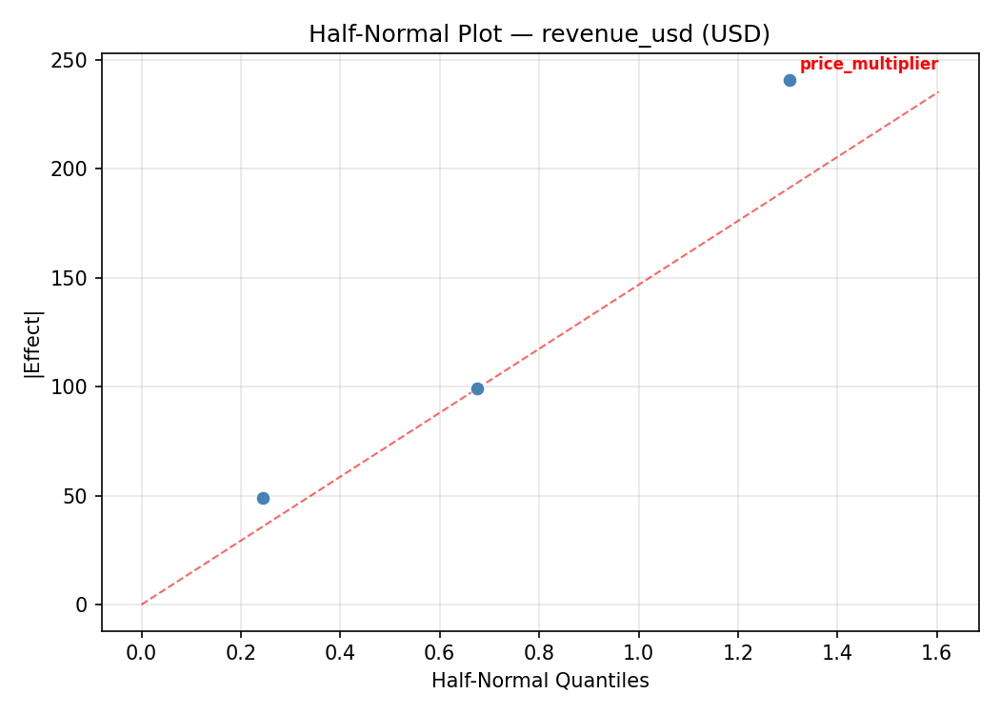
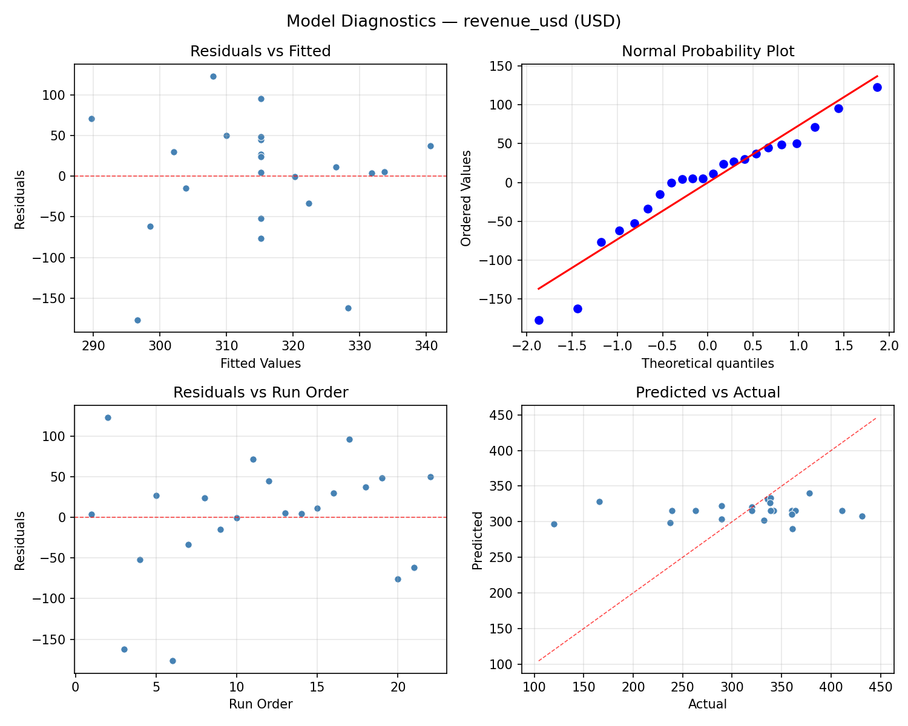
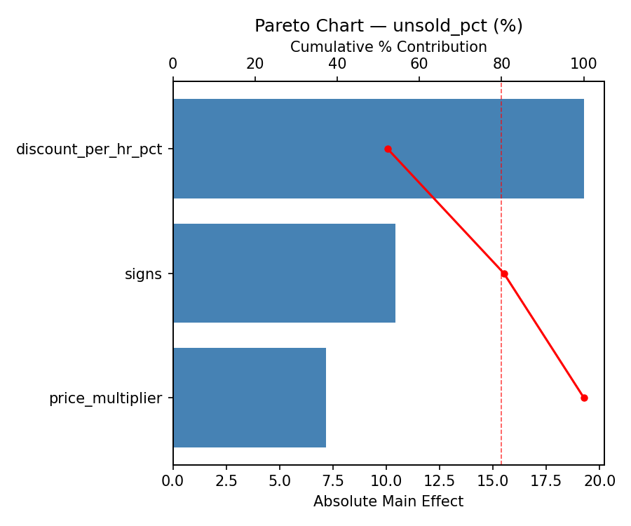
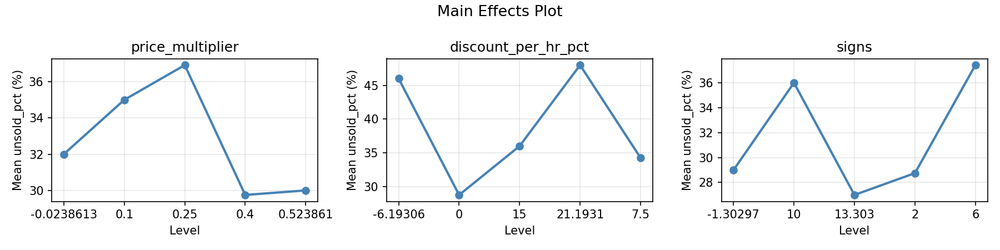
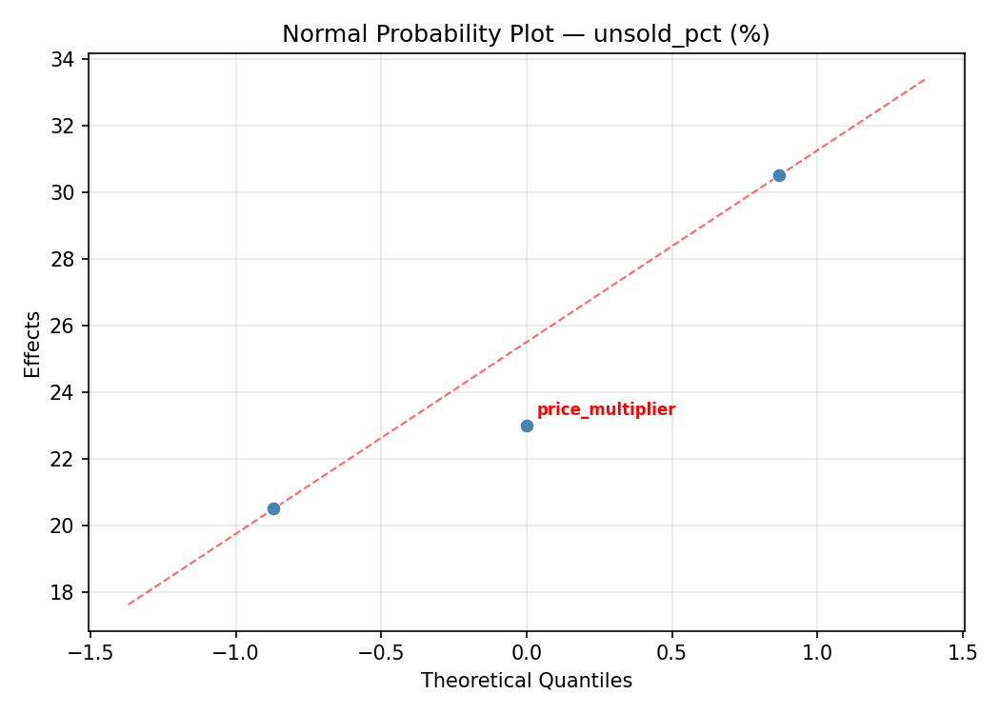
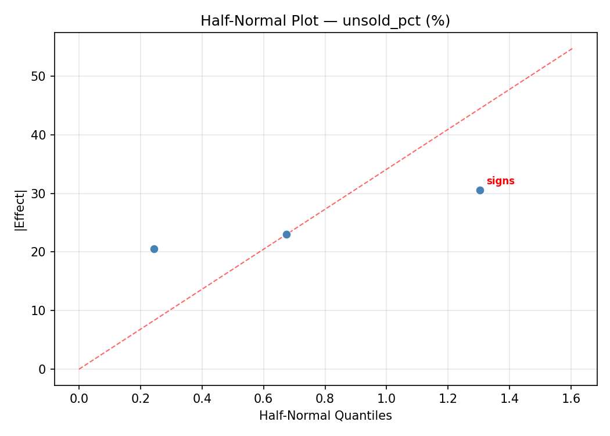
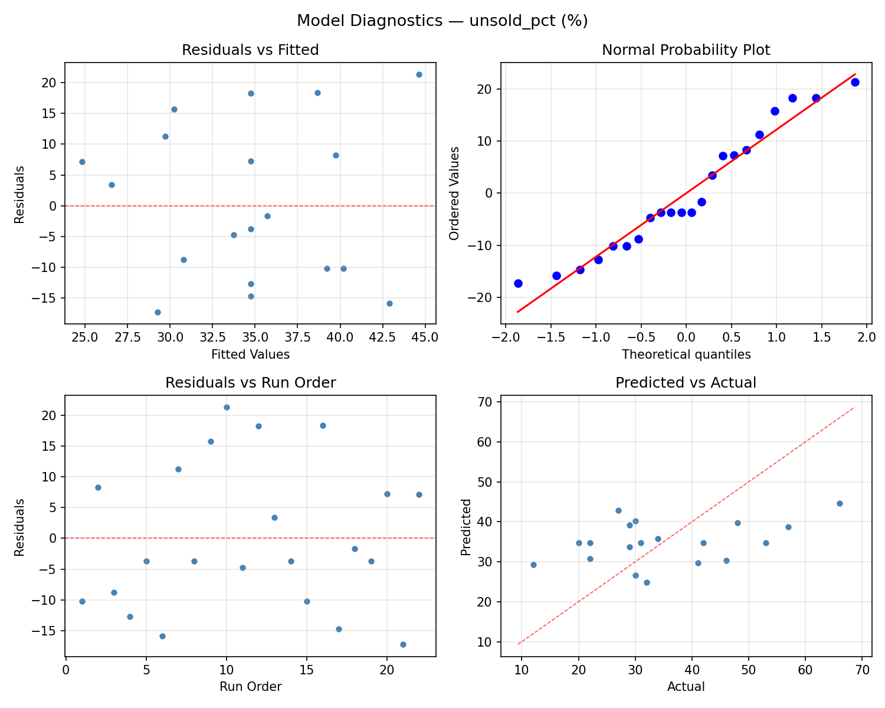
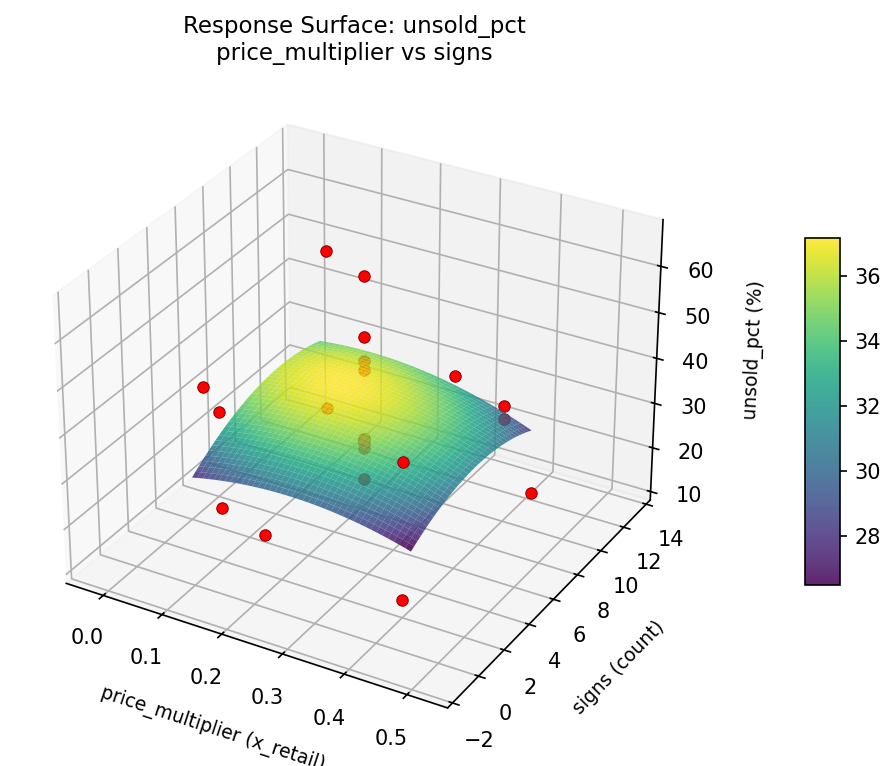

Summary
This experiment investigates garage sale pricing strategy. Central composite design to maximize total revenue and minimize unsold items by tuning starting price multiplier, discount schedule, and signage count.
The design varies 3 factors: price multiplier (x_retail), ranging from 0.1 to 0.4, discount per hr pct (%/hr), ranging from 0 to 15, and signs (count), ranging from 2 to 10. The goal is to optimize 2 responses: revenue usd (USD) (maximize) and unsold pct (%) (minimize). Fixed conditions held constant across all runs include duration = 6hrs, items = 200.
A Central Composite Design (CCD) was selected to fit a full quadratic response surface model, including curvature and interaction effects. With 3 factors this produces 22 runs including center points and axial (star) points that extend beyond the factorial range.
Quadratic response surface models were fitted to capture potential curvature and factor interactions. The RSM contour plots below visualize how pairs of factors jointly affect each response.
Key Findings
For revenue usd, the most influential factors were discount per hr pct (38.1%), price multiplier (38.1%), signs (23.8%). The best observed value was 431.0 (at price multiplier = 0.4, discount per hr pct = 0, signs = 10).
For unsold pct, the most influential factors were discount per hr pct (43.4%), price multiplier (33.6%), signs (23.0%). The best observed value was 12.0 (at price multiplier = 0.25, discount per hr pct = 7.5, signs = -1.30297).
Recommended Next Steps
- Run confirmation experiments at the predicted optimal settings to validate the model.
- Consider whether any fixed factors should be varied in a future study.
Experimental Setup
Factors
| Factor | Low | High | Unit |
|---|
price_multiplier | 0.1 | 0.4 | x_retail |
discount_per_hr_pct | 0 | 15 | %/hr |
signs | 2 | 10 | count |
Fixed: duration = 6hrs, items = 200
Responses
| Response | Direction | Unit |
|---|
revenue_usd | ↑ maximize | USD |
unsold_pct | ↓ minimize | % |
Configuration
{
"metadata": {
"name": "Garage Sale Pricing Strategy",
"description": "Central composite design to maximize total revenue and minimize unsold items by tuning starting price multiplier, discount schedule, and signage count"
},
"factors": [
{
"name": "price_multiplier",
"levels": [
"0.1",
"0.4"
],
"type": "continuous",
"unit": "x_retail"
},
{
"name": "discount_per_hr_pct",
"levels": [
"0",
"15"
],
"type": "continuous",
"unit": "%/hr"
},
{
"name": "signs",
"levels": [
"2",
"10"
],
"type": "continuous",
"unit": "count"
}
],
"fixed_factors": {
"duration": "6hrs",
"items": "200"
},
"responses": [
{
"name": "revenue_usd",
"optimize": "maximize",
"unit": "USD"
},
{
"name": "unsold_pct",
"optimize": "minimize",
"unit": "%"
}
],
"settings": {
"operation": "central_composite",
"test_script": "use_cases/250_garage_sale_pricing/sim.sh"
}
}
Experimental Matrix
The Central Composite Design produces 22 runs. Each row is one experiment with specific factor settings.
| Run | price_multiplier | discount_per_hr_pct | signs |
|---|
| 1 | 0.25 | 7.5 | 6 |
| 2 | 0.4 | 0 | 10 |
| 3 | 0.1 | 15 | 2 |
| 4 | 0.25 | 21.1931 | 6 |
| 5 | 0.25 | 7.5 | 6 |
| 6 | -0.0238613 | 7.5 | 6 |
| 7 | 0.25 | 7.5 | -1.30297 |
| 8 | 0.25 | 7.5 | 6 |
| 9 | 0.4 | 15 | 2 |
| 10 | 0.523861 | 7.5 | 6 |
| 11 | 0.25 | 7.5 | 6 |
| 12 | 0.25 | -6.19306 | 6 |
| 13 | 0.25 | 7.5 | 6 |
| 14 | 0.1 | 0 | 10 |
| 15 | 0.25 | 7.5 | 6 |
| 16 | 0.4 | 0 | 2 |
| 17 | 0.25 | 7.5 | 13.303 |
| 18 | 0.4 | 15 | 10 |
| 19 | 0.25 | 7.5 | 6 |
| 20 | 0.1 | 0 | 2 |
| 21 | 0.1 | 15 | 10 |
| 22 | 0.25 | 7.5 | 6 |
Step-by-Step Workflow
1
Preview the design
$ doe info --config use_cases/250_garage_sale_pricing/config.json
2
Generate the runner script
$ doe generate --config use_cases/250_garage_sale_pricing/config.json \
--output use_cases/250_garage_sale_pricing/results/run.sh --seed 42
3
Execute the experiments
$ bash use_cases/250_garage_sale_pricing/results/run.sh
4
Analyze results
$ doe analyze --config use_cases/250_garage_sale_pricing/config.json
5
Get optimization recommendations
$ doe optimize --config use_cases/250_garage_sale_pricing/config.json
6
Multi-objective optimization
With 2 competing responses, use --multi to find the best compromise via Derringer–Suich desirability.
$ doe optimize --config use_cases/250_garage_sale_pricing/config.json --multi
7
Generate the HTML report
$ doe report --config use_cases/250_garage_sale_pricing/config.json \
--output use_cases/250_garage_sale_pricing/results/report.html
Features Exercised
| Feature | Value |
|---|
| Design type | central_composite |
| Factor types | continuous (all 3) |
| Arg style | double-dash |
| Responses | 2 (revenue_usd ↑, unsold_pct ↓) |
| Total runs | 22 |
Analysis Results
Generated from actual experiment runs using the DOE Helper Tool.
Response: revenue_usd
Top factors: discount_per_hr_pct (38.1%), price_multiplier (38.1%), signs (23.8%).
ANOVA
| Source | DF | SS | MS | F | p-value |
|---|
| Source | DF | SS | MS | F | p-value |
| price_multiplier | 4 | 12132.2727 | 3033.0682 | 1.031 | 0.4422 |
| discount_per_hr_pct | 4 | 36707.2727 | 9176.8182 | 3.119 | 0.0722 |
| signs | 4 | 5173.8561 | 1293.4640 | 0.440 | 0.7774 |
| Lack | of | Fit | 2 | 39930.3712 | 19965.1856 |
| Pure | Error | 7 | 20595.5000 | | |
| Error | 9 | 60525.8712 | 2942.2143 | | |
| Total | 21 | 114539.2727 | 5454.2511 | | |
Pareto Chart

Main Effects Plot

Normal Probability Plot of Effects

Half-Normal Plot of Effects

Model Diagnostics

Response: unsold_pct
Top factors: discount_per_hr_pct (43.4%), price_multiplier (33.6%), signs (23.0%).
ANOVA
| Source | DF | SS | MS | F | p-value |
|---|
| Source | DF | SS | MS | F | p-value |
| price_multiplier | 4 | 566.4470 | 141.6117 | 0.455 | 0.7669 |
| discount_per_hr_pct | 4 | 541.6970 | 135.4242 | 0.435 | 0.7803 |
| signs | 4 | 275.1970 | 68.7992 | 0.221 | 0.9199 |
| Lack | of | Fit | 2 | 0.0000 | 0.0000 |
| Pure | Error | 7 | 2177.8750 | | |
| Error | 9 | 2111.0227 | 311.1250 | | |
| Total | 21 | 3494.3636 | 166.3983 | | |
Pareto Chart

Main Effects Plot

Normal Probability Plot of Effects

Half-Normal Plot of Effects

Model Diagnostics

Response Surface Plots
3D surfaces fitted with quadratic RSM. Red dots are observed data points.
revenue usd discount per hr pct vs signs

revenue usd price multiplier vs discount per hr pct

revenue usd price multiplier vs signs

unsold pct discount per hr pct vs signs

unsold pct price multiplier vs discount per hr pct

unsold pct price multiplier vs signs

Multi-Objective Optimization
When responses compete, Derringer–Suich desirability finds the best compromise.
Each response is scaled to a 0–1 desirability, then combined via a weighted geometric mean.
Overall Desirability
D = 0.8648
Per-Response Desirability
| Response | Weight | Desirability | Predicted | Dir |
|---|
revenue_usd |
1.5 |
|
411.00 0.8961 411.00 USD |
↑ |
unsold_pct |
1.0 |
|
20.00 0.8199 20.00 % |
↓ |
Recommended Settings
| Factor | Value |
|---|
price_multiplier | 0.4 x_retail |
discount_per_hr_pct | 15 %/hr |
signs | 2 count |
Source: from observed run #17
Trade-off Summary
Sacrifice = how much worse than single-objective best.
| Response | Predicted | Best Observed | Sacrifice |
|---|
unsold_pct | 20.00 | 12.00 | +8.00 |
Top 3 Runs by Desirability
| Run | D | Factor Settings |
|---|
| #11 | 0.7162 | price_multiplier=0.4, discount_per_hr_pct=0, signs=10 |
| #19 | 0.7064 | price_multiplier=0.25, discount_per_hr_pct=21.1931, signs=6 |
Model Quality
| Response | R² | Type |
|---|
unsold_pct | 0.4675 | quadratic |
Full Multi-Objective Output
============================================================
MULTI-OBJECTIVE OPTIMIZATION
Method: Derringer-Suich Desirability Function
============================================================
Overall desirability: D = 0.8648
Response Weight Desirability Predicted Direction
---------------------------------------------------------------------
revenue_usd 1.5 0.8961 411.00 USD ↑
unsold_pct 1.0 0.8199 20.00 % ↓
Recommended settings:
price_multiplier = 0.4 x_retail
discount_per_hr_pct = 15 %/hr
signs = 2 count
(from observed run #17)
Trade-off summary:
revenue_usd: 411.00 (best observed: 431.00, sacrifice: +20.00)
unsold_pct: 20.00 (best observed: 12.00, sacrifice: +8.00)
Model quality:
revenue_usd: R² = 0.3879 (quadratic)
unsold_pct: R² = 0.4675 (quadratic)
Top 3 observed runs by overall desirability:
1. Run #17 (D=0.8648): price_multiplier=0.4, discount_per_hr_pct=15, signs=2
2. Run #11 (D=0.7162): price_multiplier=0.4, discount_per_hr_pct=0, signs=10
3. Run #19 (D=0.7064): price_multiplier=0.25, discount_per_hr_pct=21.1931, signs=6
Full Analysis Output
=== Main Effects: revenue_usd ===
Factor Effect Std Error % Contribution
--------------------------------------------------------------
discount_per_hr_pct 120.2500 15.7455 38.1%
price_multiplier 120.0000 15.7455 38.1%
signs 75.0000 15.7455 23.8%
=== ANOVA Table: revenue_usd ===
Source DF SS MS F p-value
-----------------------------------------------------------------------------
price_multiplier 4 12132.2727 3033.0682 1.031 0.4422
discount_per_hr_pct 4 36707.2727 9176.8182 3.119 0.0722
signs 4 5173.8561 1293.4640 0.440 0.7774
Lack of Fit 2 39930.3712 19965.1856 6.786 0.0230
Pure Error 7 20595.5000 2942.2143
Error 9 60525.8712 2942.2143
Total 21 114539.2727 5454.2511
=== Summary Statistics: revenue_usd ===
price_multiplier:
Level N Mean Std Min Max
------------------------------------------------------------
-0.0238613 1 411.0000 0.0000 411.0000 411.0000
0.1 4 291.0000 83.8491 166.0000 342.0000
0.25 12 314.2500 49.8272 237.0000 378.0000
0.4 4 312.2500 134.1700 120.0000 431.0000
0.523861 1 339.0000 0.0000 339.0000 339.0000
discount_per_hr_pct:
Level N Mean Std Min Max
------------------------------------------------------------
-6.19306 1 263.0000 0.0000 263.0000 263.0000
0 4 361.7500 46.2340 336.0000 431.0000
15 4 241.5000 116.4288 120.0000 360.0000
21.1931 1 289.0000 0.0000 289.0000 289.0000
7.5 12 330.7500 52.8740 237.0000 411.0000
signs:
Level N Mean Std Min Max
------------------------------------------------------------
-1.30297 1 289.0000 0.0000 289.0000 289.0000
10 4 303.2500 131.2539 120.0000 431.0000
13.303 1 364.0000 0.0000 364.0000 364.0000
2 4 300.0000 89.9926 166.0000 360.0000
6 12 322.3333 55.0922 237.0000 411.0000
=== Main Effects: unsold_pct ===
Factor Effect Std Error % Contribution
--------------------------------------------------------------
discount_per_hr_pct 24.0000 2.7502 43.4%
price_multiplier 18.5833 2.7502 33.6%
signs 12.7500 2.7502 23.0%
=== ANOVA Table: unsold_pct ===
Source DF SS MS F p-value
-----------------------------------------------------------------------------
price_multiplier 4 566.4470 141.6117 0.455 0.7669
discount_per_hr_pct 4 541.6970 135.4242 0.435 0.7803
signs 4 275.1970 68.7992 0.221 0.9199
Lack of Fit 2 0.0000 0.0000 0.000 1.0000
Pure Error 7 2177.8750 311.1250
Error 9 2111.0227 311.1250
Total 21 3494.3636 166.3983
=== Summary Statistics: unsold_pct ===
price_multiplier:
Level N Mean Std Min Max
------------------------------------------------------------
-0.0238613 1 20.0000 0.0000 20.0000 20.0000
0.1 4 28.5000 4.3589 22.0000 31.0000
0.25 12 38.5833 15.3650 12.0000 66.0000
0.4 4 34.0000 9.5568 27.0000 48.0000
0.523861 1 31.0000 0.0000 31.0000 31.0000
discount_per_hr_pct:
Level N Mean Std Min Max
------------------------------------------------------------
-6.19306 1 22.0000 0.0000 22.0000 22.0000
0 4 34.5000 9.0370 29.0000 48.0000
15 4 28.0000 4.5461 22.0000 32.0000
21.1931 1 46.0000 0.0000 46.0000 46.0000
7.5 12 37.1667 15.5086 12.0000 66.0000
signs:
Level N Mean Std Min Max
------------------------------------------------------------
-1.30297 1 41.0000 0.0000 41.0000 41.0000
10 4 34.2500 9.3586 27.0000 48.0000
13.303 1 31.0000 0.0000 31.0000 31.0000
2 4 28.2500 4.3493 22.0000 32.0000
6 12 36.8333 16.2359 12.0000 66.0000
Optimization Recommendations
=== Optimization: revenue_usd ===
Direction: maximize
Best observed run: #2
price_multiplier = 0.4
discount_per_hr_pct = 0
signs = 10
Value: 431.0
RSM Model (linear, R² = 0.0409, Adj R² = -0.1190):
Coefficients:
intercept +315.1818
price_multiplier -10.4870
discount_per_hr_pct -12.8198
signs +6.7086
RSM Model (quadratic, R² = 0.2735, Adj R² = -0.2713):
Coefficients:
intercept +309.2606
price_multiplier -10.4870
discount_per_hr_pct -12.8198
signs +6.7086
price_multiplier*discount_per_hr_pct -34.0000
price_multiplier*signs -10.7500
discount_per_hr_pct*signs -26.0000
price_multiplier^2 +20.8105
discount_per_hr_pct^2 -6.1894
signs^2 -5.7394
Curvature analysis:
price_multiplier coef=+20.8105 convex (has a minimum)
discount_per_hr_pct coef=-6.1894 concave (has a maximum)
signs coef=-5.7394 concave (has a maximum)
Notable interactions:
price_multiplier*discount_per_hr_pct coef=-34.0000 (antagonistic)
discount_per_hr_pct*signs coef=-26.0000 (antagonistic)
price_multiplier*signs coef=-10.7500 (antagonistic)
Predicted optimum (from linear model, at observed points):
price_multiplier = 0.1
discount_per_hr_pct = 0
signs = 10
Predicted value: 345.1972
Surface optimum (via L-BFGS-B, linear model):
price_multiplier = 0.1
discount_per_hr_pct = 0
signs = 10
Predicted value: 345.1972
Model quality: Weak fit — consider adding center points or using a different design.
Factor importance:
1. signs (effect: 124.0, contribution: 38.8%)
2. price_multiplier (effect: 108.8, contribution: 34.0%)
3. discount_per_hr_pct (effect: 87.0, contribution: 27.2%)
=== Optimization: unsold_pct ===
Direction: minimize
Best observed run: #21
price_multiplier = 0.25
discount_per_hr_pct = 7.5
signs = -1.30297
Value: 12.0
RSM Model (linear, R² = 0.0229, Adj R² = -0.1399):
Coefficients:
intercept +34.7273
price_multiplier -1.0171
discount_per_hr_pct +0.8796
signs +1.9116
RSM Model (quadratic, R² = 0.2032, Adj R² = -0.3944):
Coefficients:
intercept +36.4246
price_multiplier -1.0171
discount_per_hr_pct +0.8796
signs +1.9117
price_multiplier*discount_per_hr_pct +0.6250
price_multiplier*signs +4.1250
discount_per_hr_pct*signs -2.8750
price_multiplier^2 -1.7487
discount_per_hr_pct^2 +2.4513
signs^2 -3.2487
Curvature analysis:
signs coef=-3.2487 concave (has a maximum)
discount_per_hr_pct coef=+2.4513 convex (has a minimum)
price_multiplier coef=-1.7487 concave (has a maximum)
Notable interactions:
price_multiplier*signs coef=+4.1250 (synergistic)
discount_per_hr_pct*signs coef=-2.8750 (antagonistic)
price_multiplier*discount_per_hr_pct coef=+0.6250 (synergistic)
Predicted optimum (from linear model, at observed points):
price_multiplier = 0.1
discount_per_hr_pct = 15
signs = 10
Predicted value: 38.5356
Surface optimum (via L-BFGS-B, linear model):
price_multiplier = 0.4
discount_per_hr_pct = 0
signs = 2
Predicted value: 30.9189
Model quality: Weak fit — consider adding center points or using a different design.
Factor importance:
1. discount_per_hr_pct (effect: 35.0, contribution: 41.7%)
2. signs (effect: 26.5, contribution: 31.5%)
3. price_multiplier (effect: 22.5, contribution: 26.8%)